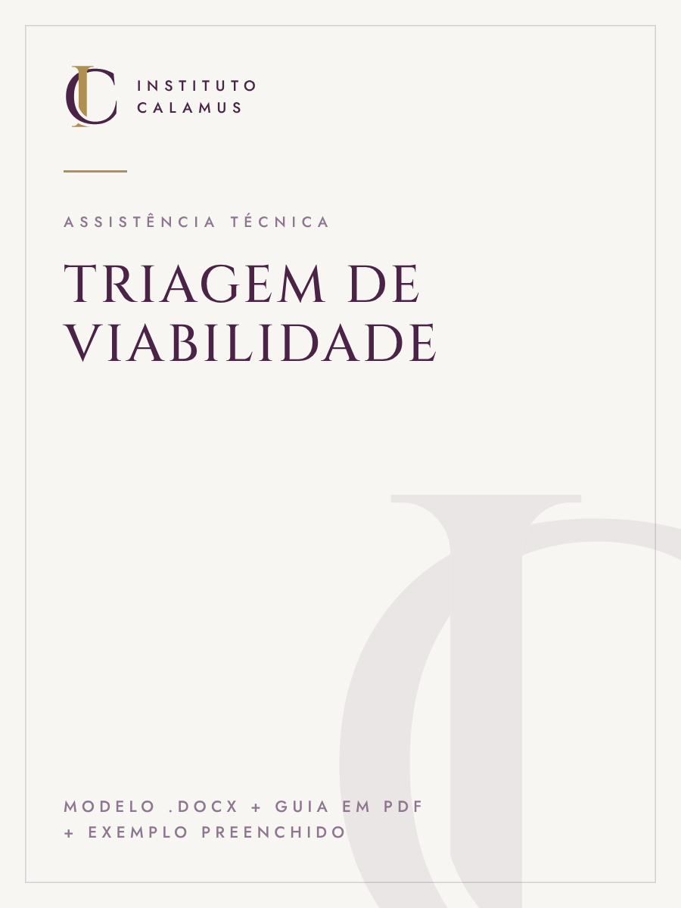
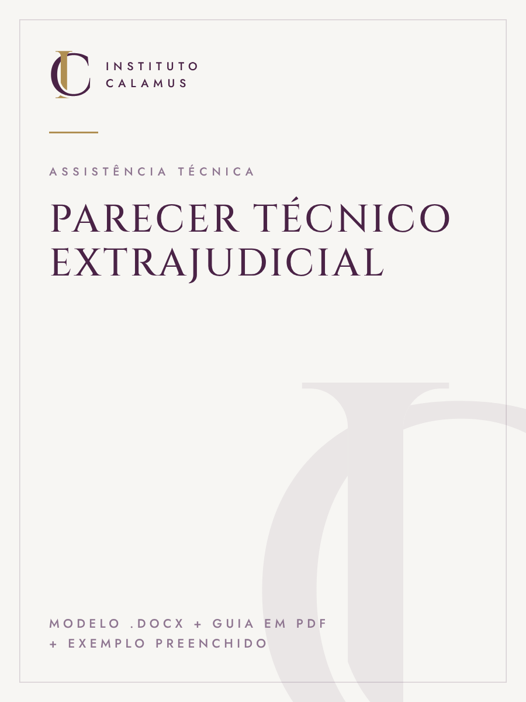
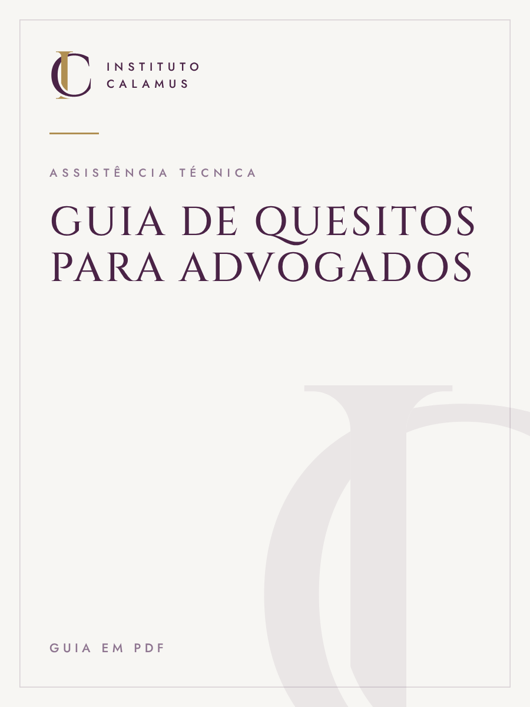
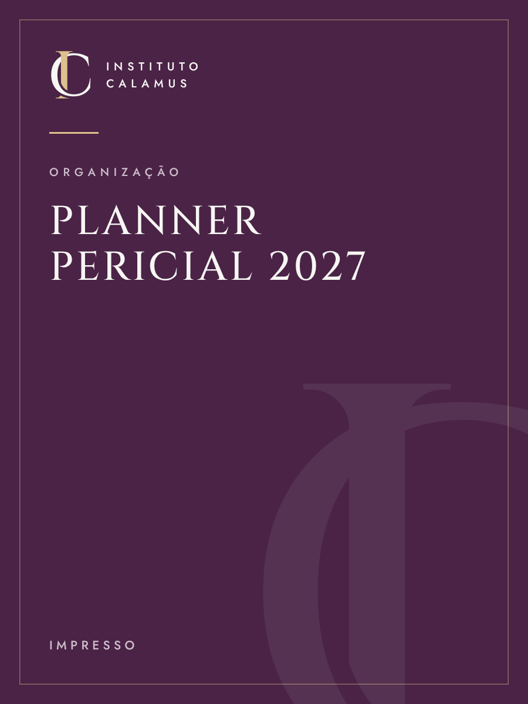
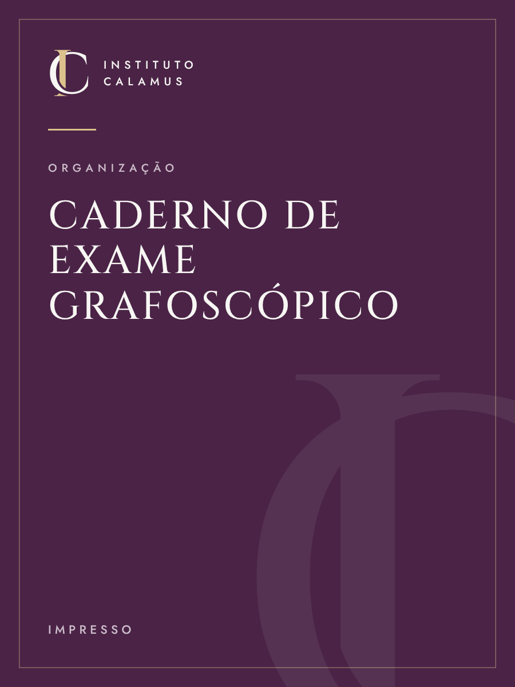
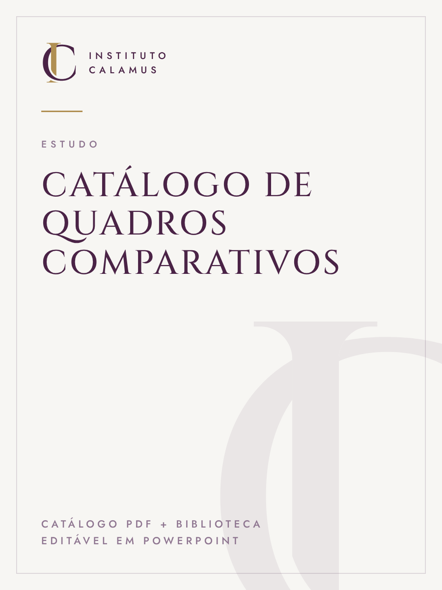
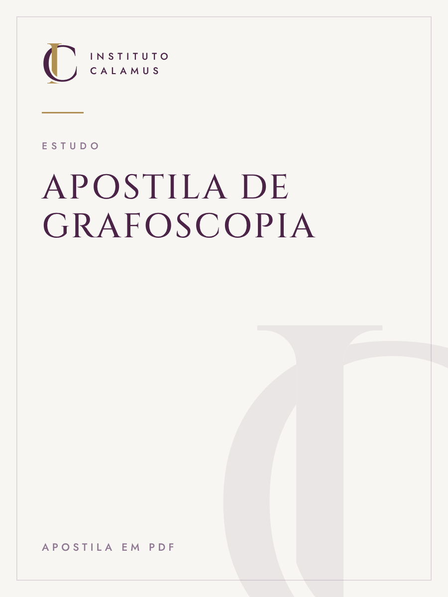

Kit de Petições do Perito
Modelos editáveis para as petições mais frequentes do perito judicial, da manifestação de aceite à proposta de honorários, com orientação de uso em cada uma.
Modelos .docx + guia em PDF
Em breve

Loja
Modelos, guias e ferramentas para o trabalho pericial, feitos a partir da prática. A compra é feita pela Kiwify, com acesso imediato aos arquivos digitais.
Modelos editáveis para as petições mais frequentes do perito judicial, da manifestação de aceite à proposta de honorários, com orientação de uso em cada uma.
Modelos .docx + guia em PDF

O caminho do cadastro de peritos passo a passo: documentos, sistemas e cuidados para não ter a inscrição recusada.
Guia em PDF

Estrutura completa de laudo para exame grafotécnico, explicada seção por seção, com um exemplo preenchido para consulta.
Modelo .docx + guia em PDF + exemplo preenchido

Parecer curto pré-processual para avaliar, antes da ação, se o material disponível permite um exame grafotécnico conclusivo.
Modelo .docx + guia em PDF + exemplo preenchido

Modelo de parecer técnico completo para atuação como assistente técnico ou em demandas extrajudiciais.
Modelo .docx + guia em PDF + exemplo preenchido

Como formular quesitos que o exame grafotécnico consegue responder, e quais evitar.
Guia em PDF
Template para controlar processos, prazos, honorários e diligências em um só lugar.
Template Notion
A mesma estrutura de controle em planilha, compatível com Excel, Google Planilhas e LibreOffice.
Planilha .xlsx

Planner anual para peritos: gestão de processos, prazos processuais e controle de honorários.
Impresso

Caderno técnico para registro manual do exame, do recebimento do material à conclusão.
Impresso

Modelos de pranchas de confronto de imagens para laudos e pareceres.
Catálogo PDF + biblioteca editável em PowerPoint

Fundamentos teóricos da grafoscopia, organizados para estudo.
Apostila em PDF